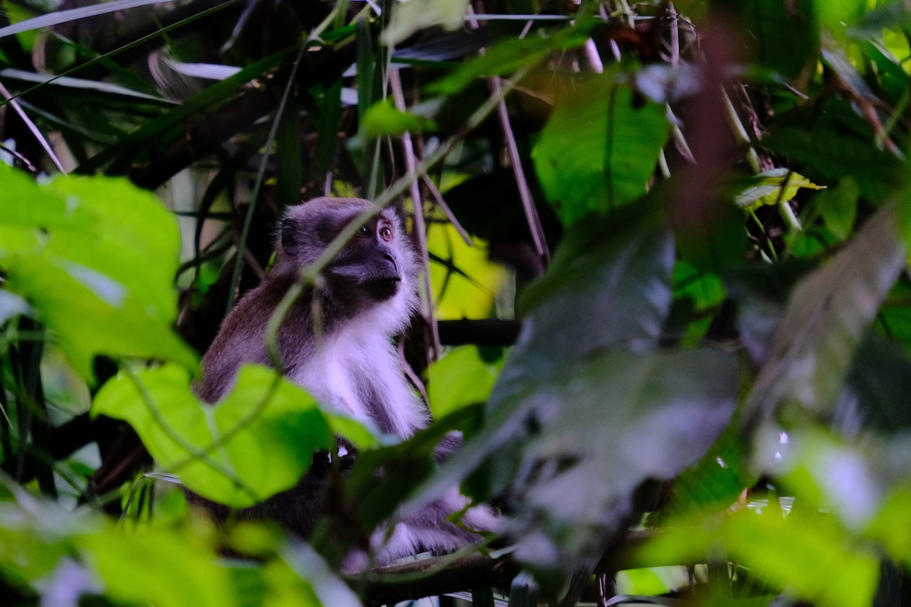
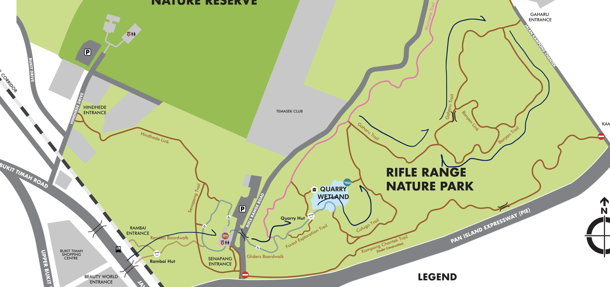

Retreat
into
Nature
Lord, purge our eyes to see
Within the seed a tree,
Within the glowing egg a bird,
Within the shroud a butterfly.
Till, taught by such we see...
Beyond all creatures, Thee.
- Christina Rossetti

Preliminaries
Forests and Sacred Space in the Ethiopian Tradition
Is there any significant connection between our faith and the natural world? Take some time to watch this short video documenting the relationship between the Ethiopian Church and the forests in their land. As you watch, think about why are the forests important to the Church? What reasons do they give for preserving them around their church buildings?
Why the Ethiopian Church preserves the forests around church buildings may seem odd (or even heterodox!) to us from a different church tradition. Clearly, forests are not a factor in the architectural design of church buildings in Singapore, since not a single one of them are surrounded by trees! Neither do we think much about the concept of sacred space. However, within Scripture does lie a deep connection between sacred space and nature that forms the basis of the Ethiopian Church's relationship with their forests. Perhaps this is also a concept we might wish to retrieve.
A fact which may escape most of us is the connection between the Solomonic Temple and the Garden of Eden. Understandably, we give short shrift to the lengthy and dry architectural descriptions of the temple in 1 Kings 6-7. If we were to pay attention to the details, there are many references to elements from nature. Why the biophilic design? That is because they are meant to recall the Garden of Eden which was the original temple of God on earth.
This assertion may seem strange because there is nothing explicit about this in the second creation account. However, the language used to describe the Garden do allude to it being a temple and the first humans as its priestly functionaries (Gen 2:8-17).
Firstly, the Garden is described in a way which ancients Israelites will recognise as sacred space. A river flows from it and divides into four more major rivers. Geographically, this means that Eden must be located on a mountain of sorts. Ezekiel 28.13-16 confirms this by explicitly referring to the Garden of Eden as God’s garden on God’s holy mountain. In the ancient Near East, mountains had a sacred character and were regarded as dwelling places for gods. This is why gods were worshipped on "high places." Similarly, the Psalms and the prophetic literature speak of God dwelling on the cosmic mountain of Zion.
Then there is the image of the river from Eden watering the whole of the known ancient world through its four distributaries (alluding to the four cardinal points of the compass)—the waters of Eden is what gives life to the world. This motif of a cosmic life-giving river flowing out from sacred space is repeated in descriptions of God’s eschatological temple/city in Ezekiel 47.1-12 and Revelation 21.1-2.
Lastly, both the Hebrew verbs used in Genesis 2.15 for Adam’s duties (“to till it and keep it”) are also used for levitical duties in Israel’s tabernacle/temple. His gardening duties are regarded as priestly because the Garden of Eden is God's abode on earth. In tending to the Garden, he is tending to God's sacred space.
It is interesting that the original temple God designed for himself was not some fancy building but a garden. It is even more interesting that the first vocation of humans in Scripture is to be garderners. Humans were created to worship God in the midst of nature (albeit a cultivated one). The place of nature and sacred space in our faith, and the relationship between them, is something we have largely lost sight of. It is therefore providential that the Ethiopian Church continues to preserve this aspect of the faith in its preservation of forests as sacred spaces.
For a long time, Western Christianity has been influenced by the Baconian Program that treats the natural world as mere resources to be exploited. It has been desacralized by the rapacious greed of capitalists and consumerists alike, such that we find it hard to see how the created natural world itself gives glory to God by its very existence (Ps. 19.1-4). Yet, before humans came to be, God was already dwelling in the praises of nature. Despite human sin and failure, nature never ceases to give glory to God (Ps. 96.11-13).
The Ethiopian Church reminds us that we encounter and worship God along with the natural world. It is hoped that with a prayerful appreciation of nature, we can be drawn into a more exuberant praise of God along with it; and with a prayerful attention to nature, we can open ourselves to an encounter with God through it.
Open the Eyes of My Heart, Lord
Steps for Contemplation
- Take a deep breath and quieten your heart. In the silence, ask God to speak to you through his creation.
- Start to pay attention to the natural world around you. Experience it through the different senses of smell, hearing, touch, and sight.
- As you experience the nature around, what do you find interesting? Move closer to one thing that draws your attention and reflect on what that might be telling you. What do you like most about it, and why? What might God be speaking to you through it? Sometimes, it may not be a particular thing but a scene that appears before you and captivates you.
- Talk to God about what you have smelt, heard, touched, or seen. Talk about the thoughts and feelings that have arisen through your experience of nature.
- Be still with God and enjoy the moment. Stay where you are for another moment in silence.
Route Map
The black arrows on this map cutout indicate the suggested route to be taken. Tap on map to enlarge.
{kind=link}